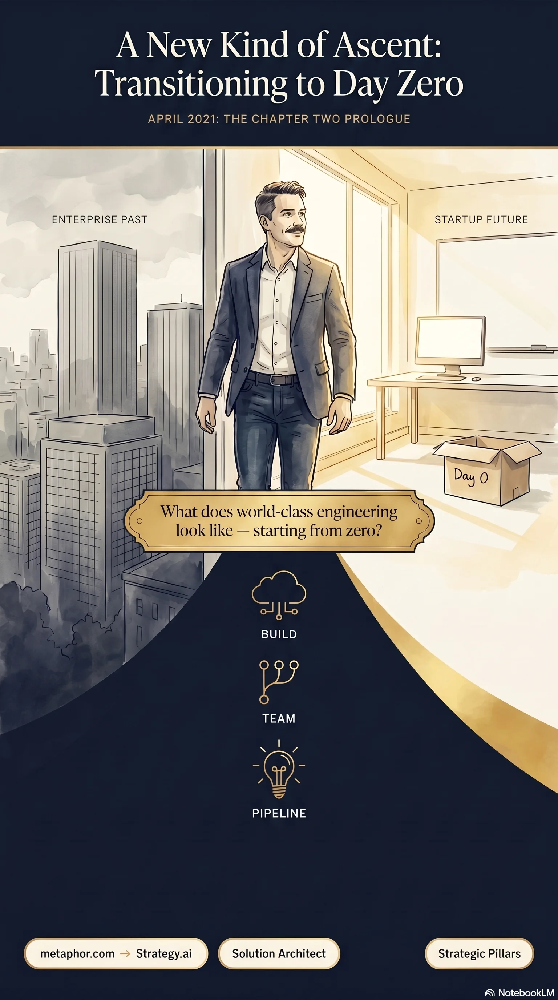
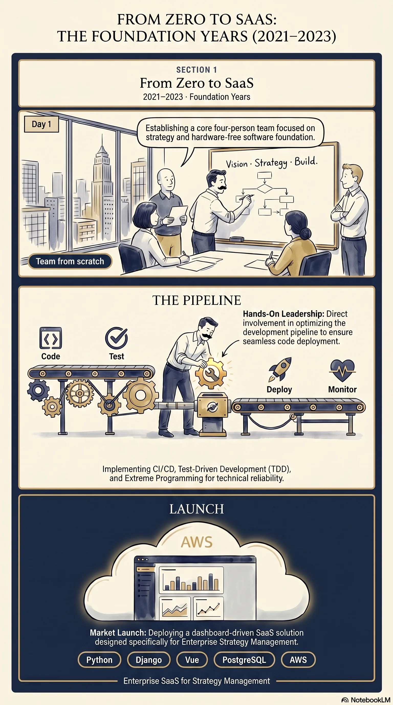
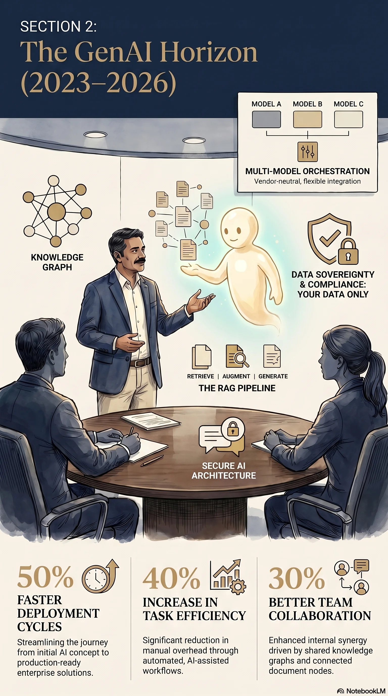
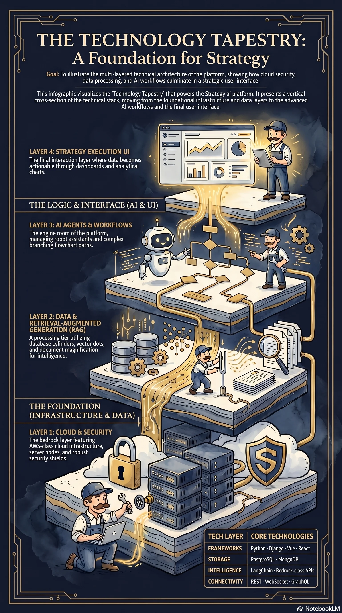
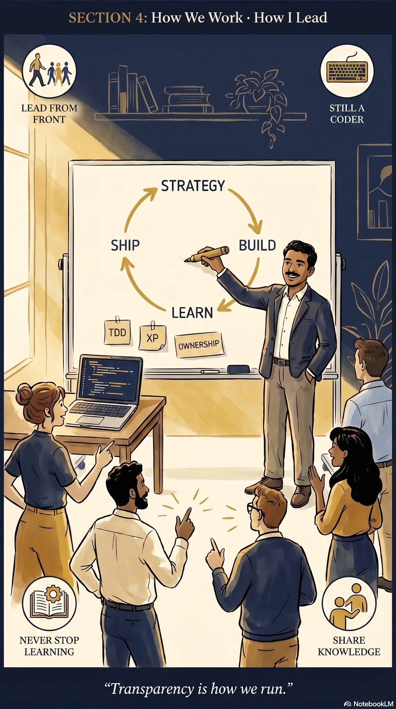
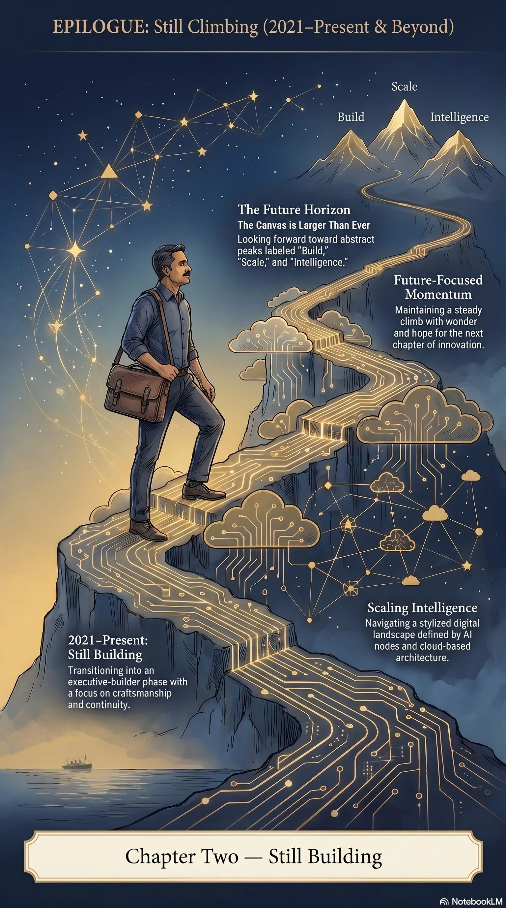

Chapter Two
EC Group & Strategy.ai
Senior Director of Technology · Apr 2021 – Present · Generative AI & SaaS
A New Kind of Ascent
If Cognizant taught me to navigate enterprise oceans, EC Group Datasoft taught me to build the vessel itself — then fill its sails with intelligence.
In April 2021, I made a deliberate choice: leave the comfort of a global delivery machine and step into the volatility of product creation.
EC Group assigned me to Strategy.ai — then known as metaphor.com, a startup with ambition, a blank architecture slate, and the need for someone who could be Solution Architect, product development lead, and culture setter in the same breath.
I did not join to oversee from a distance. I joined to build — team, pipeline, platform, and philosophy.
But before any of that vocabulary existed in our pitch decks, there was an empty repository and a question: What does world-class product engineering look like when you are starting from zero?

From Zero to SaaS
The mandate. Stand up a team from scratch. Deliver an enterprise SaaS product for vision and strategy management — secure, scalable, and built to earn the trust of large organizations.
The philosophy. Extreme Programming. Test-Driven Development. Every engineer exposed to the full lifecycle — from inception through deployment — so ownership was a daily habit, not a poster on the wall.
The platform. Cloud architecture from the ground up. Clean, secure CI/CD pipelines. Scalable multi-tenant SaaS. API-first design with REST and WebSocket surfaces. Python · Django · JavaScript · Vue.js · PostgreSQL · MongoDB · AWS.
This was the period that proved I could compress what Cognizant taught across decades into a startup clock — without sacrificing quality.

The GenAI Horizon
Then the world changed — again — and so did we.
As large language models moved from novelty to infrastructure, Strategy.ai expanded into a GenAI-powered suite. We rebranded with conviction: the metaphor had become the method.
What we built:
- Enterprise AI copilots and agents for strategy execution
- Governed knowledge workflows with retrieval you can trust
- Proprietary-content chatbots grounded in your data
- Advanced RAG pipelines, vector databases, knowledge graphs
- Workflow builders for domain-specific AI mentors and coaches
The trust layer: HIPAA · GDPR · secure SaaS · compliance-by-design onboarding.

The Technology Tapestry
Enterprise AI & GenAI. LLMs · OpenAI · Anthropic · Gemini · Llama · AWS Bedrock · RAG · vector databases · LangChain · agentic workflows · AI governance · Knowledge Graph.
Cloud & SaaS. AWS · Azure · cloud-native SaaS · serverless · API architecture · DevOps · CI/CD · observability · cost optimization.
Product engineering. Python · Django · Vue.js · React · PostgreSQL · MongoDB · REST & WebSocket APIs.
The Cognizant years inform how Strategy.ai earns enterprise trust — healthcare rigor, life sciences discipline, and transformation at scale.

How We Work · How I Lead
On people. I lead from the front — not manage from the top. Transparency is how we run sprint reviews, incident calls, and roadmap debates.
On craft. I am still a coder. TDD and XP are how we keep velocity without trading away tomorrow's maintainability.
On learning. The same curiosity that pulled me from COBOL to LLMs pulls me into the next framework, the next model, the next failure that teaches more than the last success.
On the mission. Strategy.ai exists so organizations can execute strategy with clarity — and now, with intelligence that respects their data, their compliance boundaries, and their ambition.

Still Climbing
After twenty-three winters ascending the tech hierarchy to steer multi-million-dollar ships, I remain a developer at heart.
EC Group and Strategy.ai are where that heart meets the future.
I came to build a SaaS platform from zero. I stayed to reinvent it in the age of AI — RAG pipelines, knowledge graphs, governed agents, compliance-first design, and the relentless joy of making something that works in production.
Cognizant taught me enterprise gravity. Strategy.ai lets me defy it — move fast, think big, ship with discipline.
The ascent continues. The canvas is larger than ever.
